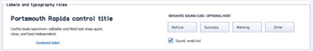

class · visual
Label
Label is a noninteractive retained text primitive with inherited typography roles, explicit font/color overrides, horizontal and vertical alignment, word wrapping, bounded line count, line spacing, mnemonics, and static-text semantics.
Visual evidence

Ownership and hierarchy
- Hierarchy
- Control → Label
- Declaration
- include/gui_forms/controls/label/label.hpp:40
- Definition
- src/controls/label/label.cpp
Declared methods
Label public
explicit Label(StableId stable_id, std::string text =Constructs retained text and reflected Text, Font, ForeColor, and MaximumLines properties.
text public
[[nodiscard]] const std::string& text() const noexceptReturns the authored UTF-8 text including any mnemonic marker.
set_text public
virtual void set_text(std::string text)Commits text, publishes text_changed, and avoids ancestor layout work for fixed-size telemetry labels.
font public
[[nodiscard]] FontSpec font() const noexceptResolves an explicit font or the active Theme typography token selected by text_style_role.
has_font_override public
[[nodiscard]] bool has_font_override() const noexceptReports whether a caller-owned FontSpec supersedes Theme typography.
set_font public
void set_font(FontSpec font)Validates and installs an explicit FontSpec with measure, paint, and semantic invalidation.
clear_font public
void clear_font()Removes the explicit font and resumes inherited role typography.
text_style_role public
[[nodiscard]] TextStyleRole text_style_role() const noexceptReturns the body, control, caption, heading, title, or monospace typography role.
set_text_style_role public
void set_text_style_role(TextStyleRole role)Validates the role and updates inherited typography without disturbing an explicit font.
foreground public
[[nodiscard]] Color foreground() const noexceptResolves an explicit color or the active panel-role text color.
has_foreground_override public
[[nodiscard]] bool has_foreground_override() const noexceptReports whether a caller-owned text color is active.
set_foreground public
void set_foreground(Color color)Installs an explicit foreground color and invalidates paint and semantics.
clear_foreground public
void clear_foreground()Removes the explicit color and resumes Theme text color.
alignment public
[[nodiscard]] HorizontalAlignment alignment() const noexceptReturns per-line near, center, or far horizontal alignment.
set_alignment public
void set_alignment(HorizontalAlignment alignment)Validates and commits horizontal alignment without changing measurement.
vertical_alignment public
[[nodiscard]] VerticalAlignment vertical_alignment() const noexceptReturns near, center, or far placement for the complete line block.
set_vertical_alignment public
void set_vertical_alignment(VerticalAlignment alignment)Validates and commits vertical block alignment.
text_wrapping public
[[nodiscard]] TextWrapping text_wrapping() const noexceptReturns no-wrap or renderer-neutral word wrapping policy.
set_text_wrapping public
void set_text_wrapping(TextWrapping wrapping)Validates wrapping policy and invalidates size, paint, and semantics.
line_spacing public
[[nodiscard]] double line_spacing() const noexceptReturns the font-size multiplier used between retained baselines.
set_line_spacing public
void set_line_spacing(double spacing)Accepts only finite values from 0.75 through 3.0 and invalidates affected phases.
maximum_lines public
[[nodiscard]] std::size_t maximum_lines() const noexceptReturns zero for unlimited lines or the positive measure/paint line ceiling.
set_maximum_lines public
void set_maximum_lines(std::size_t maximum_lines)Accepts zero through 4096, bounds desired height and actual painting, and leaves full semantic text intact.
use_mnemonic public
[[nodiscard]] bool use_mnemonic() const noexceptReports whether ampersands define a displayed mnemonic.
set_use_mnemonic public
void set_use_mnemonic(bool value)Toggles mnemonic display parsing and focus-next routing.
text_changed public
[[nodiscard]] Event<const std::string&>& text_changed() noexceptReturns the event published after retained text commits.
measure public
[[nodiscard]] Size measure(Size available) overrideWraps text against the active constraint, applies MaximumLines, and derives content size unless fixed bounds win.
on_paint public
void on_paint(Painter& painter, Rect local_damage) overrideRecords aligned visible lines with the resolved font, foreground, spacing, and line ceiling.
hit_test_local public
[[nodiscard]] bool hit_test_local(Point local_point) const overrideAlways declines hits so text labels remain transparent to container interaction.
semantic_descriptor public
[[nodiscard]] SemanticDescriptor semantic_descriptor() const overrideProjects full displayed text as an exposed static-text node independently of visual line limiting.
display_text protected
[[nodiscard]] virtual std::string display_text() constReports the current display text value without mutation.
paint_label_text protected
void paint_label_text(Painter& painter, std::string_view text) constReports the current paint label text value without mutation.
mnemonic_matches private
[[nodiscard]] bool mnemonic_matches( char32_t character) const noexcept overrideReports the current mnemonic matches value without mutation.
process_mnemonic_self private
bool process_mnemonic_self(char32_t character) overrideExecutes Label's process mnemonic self operation against retained state; the signature records its exact inputs, result, constness, and failure surface.